Assignment 2
Base R Graphics
Run Murrell’s R Graphics:
Figure 1.1: Simple Scatterplot:
plot(pressure) text(150, 600, "Pressure (mm Hg)\nversus\nTemperature (Celsius)")

Figure 1.2: Standard Plots
par(mfrow=c(3, 2)) # Scatterplot x <- c(0.5, 2, 4, 8, 12, 16) y1 <- c(1, 1.3, 1.9, 3.4, 3.9, 4.8) y2 <- c(4, .8, .5, .45, .4, .3) par(las=1, mar=c(4, 4, 2, 4), cex=.7) plot.new() plot.window(range(x), c(0, 6)) lines(x, y1) lines(x, y2) points(x, y1, pch=16, cex=2) points(x, y2, pch=21, bg="white", cex=2) par(col="gray50", fg="gray50", col.axis="gray50") axis(1, at=seq(0, 16, 4)) axis(2, at=seq(0, 6, 2)) axis(4, at=seq(0, 6, 2)) box(bty="u") mtext("Travel Time (s)", side=1, line=2, cex=0.8) mtext("Responses per Travel", side=2, line=2, las=0, cex=0.8) mtext("Responses per Second", side=4, line=2, las=0, cex=0.8) text(4, 5, "Bird 131") par(mar=c(5.1, 4.1, 4.1, 2.1), col="black", fg="black", col.axis="black") # Histogram # Random data Y <- rnorm(50) # Make sure no Y exceed [-3.5, 3.5] Y[Y < -3.5 | Y > 3.5] <- NA x <- seq(-3.5, 3.5, .1) dn <- dnorm(x) par(mar=c(4.5, 4.1, 3.1, 0)) hist(Y, breaks=seq(-3.5, 3.5), ylim=c(0, 0.5), col="gray80", freq=FALSE) lines(x, dnorm(x), lwd=2) par(mar=c(5.1, 4.1, 4.1, 2.1)) # Barplot # Modified from example(barplot) par(mar=c(2, 3.1, 2, 2.1)) midpts <- barplot(VADeaths, col=gray(0.1 + seq(1, 9, 2)/11), names=rep("", 4)) mtext(sub(" ", "\n", colnames(VADeaths)), at=midpts, side=1, line=0.5, cex=0.5) text(rep(midpts, each=5), apply(VADeaths, 2, cumsum) - VADeaths/2, VADeaths, col=rep(c("white", "black"), times=3:2), cex=0.8) par(mar=c(5.1, 4.1, 4.1, 2.1)) # Boxplot # Modified example(boxplot) - itself from suggestion by Roger Bivand par(mar=c(3, 4.1, 2, 0)) boxplot(len ~ dose, data = ToothGrowth, boxwex = 0.25, at = 1:3 - 0.2, subset= supp == "VC", col="white", xlab="", ylab="tooth length", ylim=c(0,35)) mtext("Vitamin C dose (mg)", side=1, line=2.5, cex=0.8) boxplot(len ~ dose, data = ToothGrowth, add = TRUE, boxwex = 0.25, at = 1:3 + 0.2, subset= supp == "OJ") legend(1.5, 9, c("Ascorbic acid", "Orange juice"), fill = c("white", "gray"), bty="n") par(mar=c(5.1, 4.1, 4.1, 2.1)) # Persp # Almost exactly example(persp) x <- seq(-10, 10, length= 30) y <- x f <- function(x,y) { r <- sqrt(x^2+y^2); 10 * sin(r)/r } z <- outer(x, y, f) z[is.na(z)] <- 1 # 0.5 to include z axis label par(mar=c(0, 0.5, 0, 0), lwd=0.5) persp(x, y, z, theta = 30, phi = 30, expand = 0.5) par(mar=c(5.1, 4.1, 4.1, 2.1), lwd=1) # Piechart # Example 4 from help(pie) par(mar=c(0, 2, 1, 2), xpd=FALSE, cex=0.5) pie.sales <- c(0.12, 0.3, 0.26, 0.16, 0.04, 0.12) names(pie.sales) <- c("Blueberry", "Cherry", "Apple", "Boston Cream", "Other", "Vanilla") pie(pie.sales, col = gray(seq(0.3,1.0,length=6)))
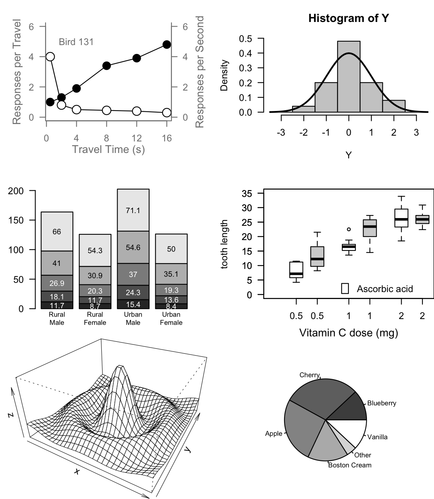
Figure 1.3: Customized Scatterplot
params <- function(N, breaks, p=seq(0.001, 1, length=100)) { list(N=N, T=1/breaks, p=p, q=1-p) } pdfcomp <- function(comp, params) { n <- params$T p <- params$p q <- params$q y <- round(comp/n) choose(n, comp)*p^comp*q^(n-comp) / (1 - q^n) } # Expected num sherds (for a vessel) [=completeness] expcomp <- function(params) { params$T*params$p/(1-params$q^params$T) } # Variance of num sherds (for a vessel) varcomp <- function(params) { n <- params$T p <- params$p q <- params$q # From Johnson & Kotz (n*p*q / (1 - q^n)) - (n^2*p^2*q^n / (1 - q^n)^2) # n^2 times Thomas Yee's formula # n^2*((p*(1 + p*(n - 1)) / (n*(1 - q^n))) - (p^2 / (1 - q^n)^2)) } # Expected value of completeness (for a sample of vessels) expmeancomp <- function(params) { expcomp(params) } # Variance of completeness (for a sample of vessels) # Use the expected number of vessels in sample as denominator varmeancomp <- function(params) { varcomp(params)/(numvess(params)) } numvess <- function(params) { params$N*(1-params$q^params$T) } ecomp <- function(p, T, comp) { q <- 1 - p T*p/(1 - q^T) - comp } estN <- function(comp, broke, n) { T <- 1/broke n / (1 - (1 - uniroot(ecomp, c(0.00001, 1), T=T, comp=comp)$root)^T) } nvessscale <- function(params, xlim, ylim, new=TRUE) { if (new) par(new=TRUE) plot(0:1, c(1, params$N), type="n", axes=!new, ann=FALSE, xlim=xlim, ylim=ylim) } compscale <- function(params, xlim, ylim, new=TRUE) { if (new) par(new=TRUE) plot(0:1, c(1, params$T), type="n", axes=!new, ann=FALSE, xlim=xlim, ylim=ylim) } lowerCI <- function(p, N, breaks, lb) { params <- params(N, breaks, p) expmeancomp(params) - 2*sqrt(varmeancomp(params)) - lb } upperCI <- function(p, N, breaks, lb) { params <- params(N, breaks, p) expmeancomp(params) + 2*sqrt(varmeancomp(params)) - lb } critP <- function(comp, params) { c(uniroot(lowerCI, c(0.00001, 1), N=params$N, breaks=1/params$T, lb=max(comp))$root, if (upperCI(0.00001, params$N, 1/params$T, min(comp)) > 0) 0 else uniroot(upperCI, c(0.00001, 1), N=params$N, breaks=1/params$T, lb=min(comp))$root) } anncomp <- function(params, comp, xlim, ylim, cylim) { cp <- critP(comp, params) nv <- numvess(params(params$N, 1/params$T, cp)) nvessscale(params, xlim, ylim) polygon(c(cp[2], cp[2], 0, 0, cp[1], cp[1]), c(0, nv[2], nv[2], nv[1], nv[1], 0), col="gray90", border=NA) text(0, nv[1], paste(round(nv[1]), " (", round(100*nv[1]/params$N), "%)", sep=""), adj=c(0, 0), col="gray") text(0, nv[2], paste(round(nv[2]), " (", round(100*nv[2]/params$N), "%)", sep=""), adj=c(0, 1), col="gray") compscale(params, xlim, cylim) segments(1, min(comp), cp[2], comp, col="gray") segments(1, max(comp), cp[1], comp, col="gray") text(1, comp, paste(comp, collapse="-"), adj=c(1, 0), col="gray") } plotPars <- function(params, comp, xlim=NULL, ylim=NULL) { mean <- expmeancomp(params) var <- 2*sqrt(varmeancomp(params)) lb <- mean - var ub <- mean + var par(mar=c(5, 4, 4, 4)) if (is.null(ylim)) cylim <- ylim else cylim <- c(1 + ((ylim[1] - 1)/(params$N - 1))*(params$T - 1), 1 + ((ylim[2] - 1)/(params$N - 1))*(params$T - 1)) nvessscale(params, xlim, ylim, new=FALSE) compscale(params, xlim, cylim) polygon(c(params$p, rev(params$p)), c(lb, rev(ub)), col="gray90", border=NA) anncomp(params, comp, xlim, ylim, cylim) nvessscale(params, xlim, ylim) mtext("Number of Vessels", side=2, line=3) mtext("Sampling Fraction", side=1, line=3) lines(params$p, numvess(params)) par(new=TRUE) compscale(params, xlim, cylim) mtext("Completeness", side=4, line=3) axis(4) lines(params$p, mean, lty="dashed") lines(params$p, lb, lty="dotted") lines(params$p, ub, lty="dotted") mtext(paste("N = ", round(params$N), " brokenness = ", round(1/params$T, 3), sep=""), side=3, line=2) } par(cex=0.8, mar=c(3, 3, 3, 3)) p6 <- params(estN(1.2, 0.5, 200), 0.5) plotPars(p6, 1.2) nvessscale(p6, NULL, NULL) pcrit <- 1 - (1 - 200/estN(1.2, 0.5, 200))^(1/p6$T) lines(c(0, pcrit), c(200, 200))
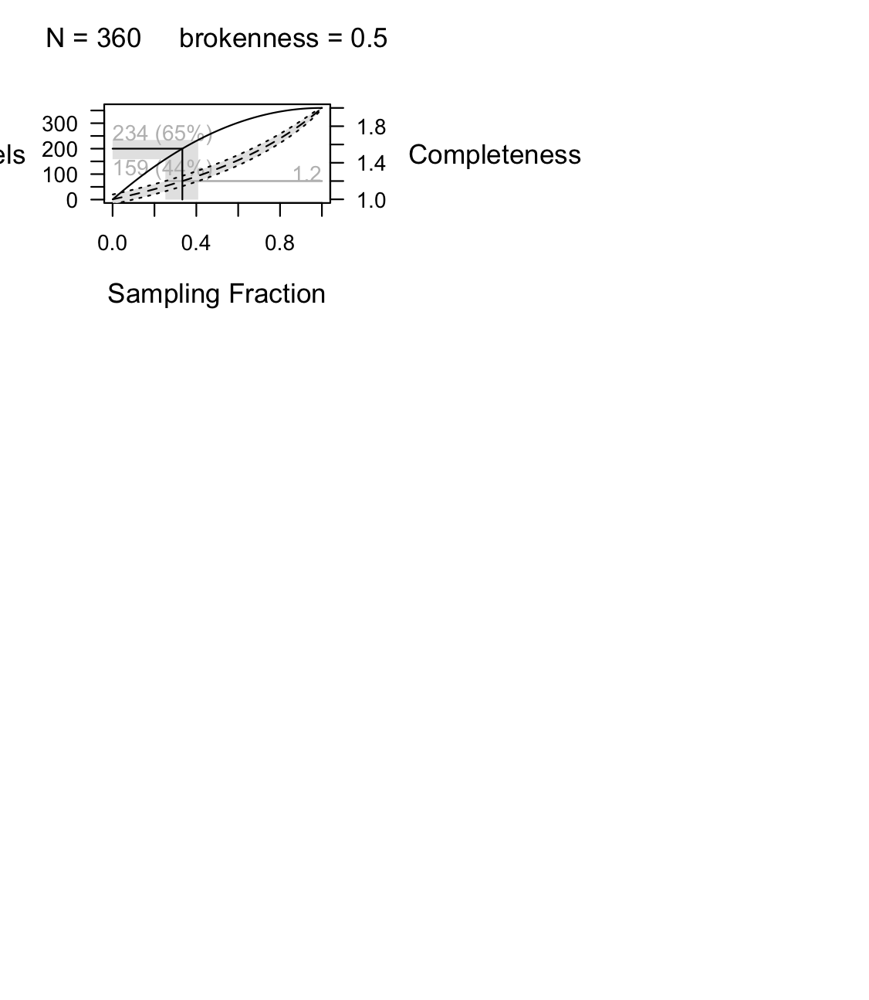
Figure 1.4: Dramatized Barplot
# Source: http://www.globaltiger.org/population.htm year <- c(1993, 1996, 1998, 2001) minpop <- c(20, 50, 50, 115) maxpop <- c(50, 240, 240, 150) library(grImport) PostScriptTrace(system.file("extra", "tiger.ps", package="RGraphics")) tiger <- grImport::readPicture("tiger.ps.xml")[-1] require(colorspace) source(system.file("extra", "grayify.R", package="RGraphics")) # grid.newpage() pushViewport(plotViewport(c(3, 2, 2, 1)), viewport(xscale=c(1991, 2003), yscale=c(0, 250))) grid.rect() # tiger backdrop in gray grImport::grid.picture(tiger, x=0.45, FUN=grayify, min=.8) grid.xaxis(at=year, gp=gpar(cex=0.7)) grid.yaxis(gp=gpar(cex=0.7)) # black bars grid.rect(x=unit(year, "native"), y=0, width=unit(1, "native"), height=unit(maxpop, "native"), just="bottom", gp=gpar(fill="black")) # tiger in bars tigerGrob <- grImport::pictureGrob(tiger, x=0.45, FUN=grImport::grobify) # Start from 2 because bar 1 does not overlap with tiger for (i in 2:length(year)) { grid.clip(x=unit(year[i], "native"), y=0, width=unit(1, "native"), height=unit(maxpop[i], "native"), just="bottom") # tiger backdrop (shift slightly to left so get one eye in one bar) grid.draw(tigerGrob) } grid.clip() # redo bar borders grid.rect(x=unit(year, "native"), y=0, width=unit(1, "native"), height=unit(maxpop, "native"), just="bottom", gp=gpar(fill=NA)) grid.text("Estimated Population (max.) of Bengal Tigers\n(in Bhutan)", y=unit(1, "npc") + unit(1, "lines")) popViewport(2)
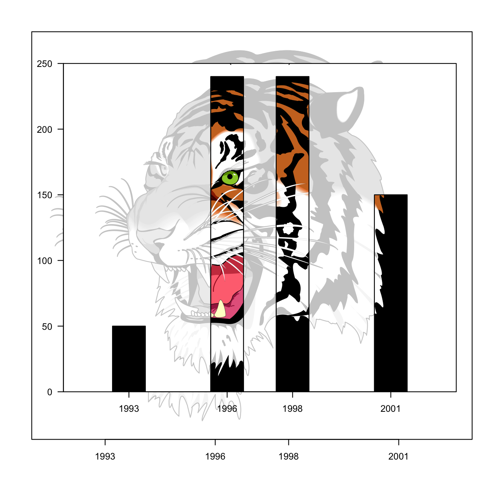
**Figure 1.5: Trellis Dotplot**
library(lattice) trellis.par.set(list(fontsize=list(text=6), par.xlab.text=list(cex=1.5), add.text=list(cex=1.5), superpose.symbol=list(cex=.5))) key <- simpleKey(levels(lattice::barley$year), space = "right") key$text$cex <- 1.5 print( dotplot(variety ~ yield | site, data = lattice::barley, groups = year, key = key, xlab = "Barley Yield (bushels/acre) ", aspect=0.5, layout = c(1,6), ylab=NULL) )
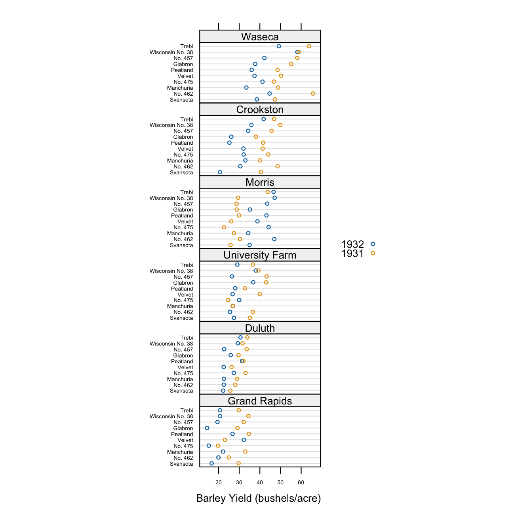
**Figure 1.6: ggplot2 Faceted Scatterplot**
library(ggplot2) print( ggplot(data=ggplot2::mpg, aes(x=displ, y=hwy, shape=factor(cyl))) + geom_point() + stat_smooth(method="lm", colour="black") + scale_shape_manual(values=c(1, 16, 3, 17)) + theme_bw() )
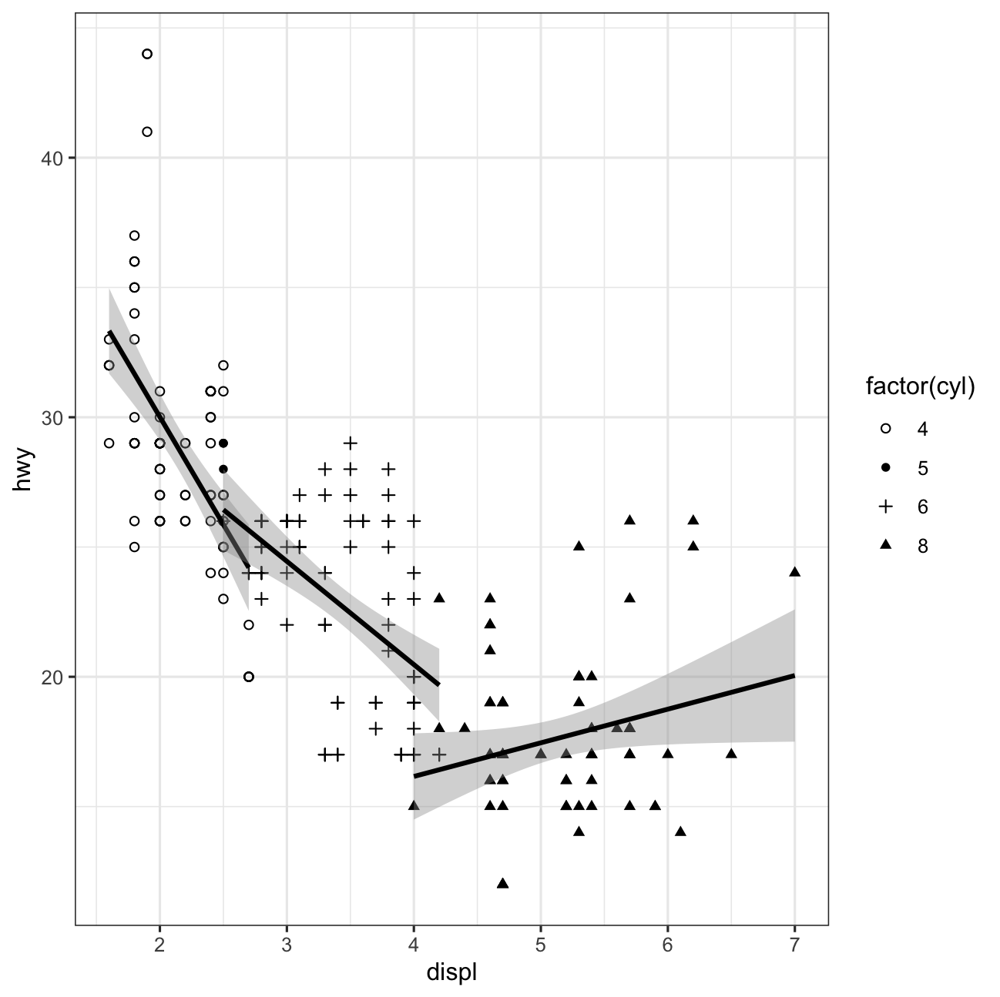
**Figure 1.7: Map of New Zealand**
library(maps) library(mapdata) par(mar=rep(1, 4)) maps::map("nzHires", fill=TRUE, col="gray80", regions=c("North Island", "South Island", "Stewart Island")) points(174.75, -36.87, pch=16, cex=2, col=rgb(0,0,0,.5)) arrows(172, -36.87, 174, -36.87, lwd=3) text(172, -36.87, "Auckland ", adj=1, cex=2) # mini world map as guide maplocs <- maps::map(projection="sp_mercator", wrap=TRUE, lwd=0.1, col="gray", ylim=c(-60, 75), interior=FALSE, orientation=c(90, 180, 0), add=TRUE, plot=FALSE) xrange <- range(maplocs$x, na.rm=TRUE) yrange <- range(maplocs$y, na.rm=TRUE) aspect <- abs(diff(yrange))/abs(diff(xrange)) # customised to 6.5 by 4.5 figure size par(fig=c(0.99 - 0.5, 0.99, 0.01, 0.01 + 0.5*aspect*4.5/6.5), mar=rep(0, 4), new=TRUE) plot.new() plot.window(xlim=xrange, ylim=yrange) maps::map(projection="sp_mercator", wrap=TRUE, lwd=0.5, ylim=c(-60, 75), interior=FALSE, orientation=c(90, 180, 0), add=TRUE) symbols(-.13, -0.8, circles=1, inches=0.1, add=TRUE, bg=rgb(0,0,0,.2)) box()
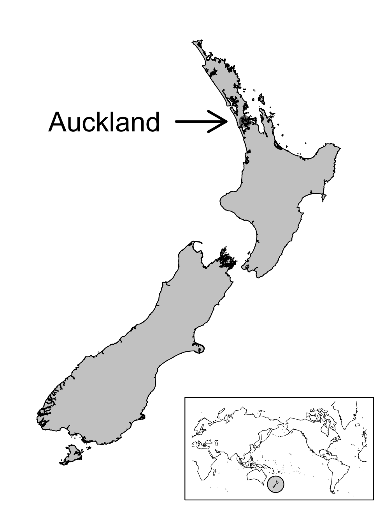
**Figure 1.8: Plot of Financial Data**
suppressPackageStartupMessages(library(quantmod)) options("getSymbols.warning4.0"=FALSE) options("getSymbols.yahoo.warning"=FALSE) quantmod::getSymbols("AABA", src="yahoo") quantmod::chartSeries(get("AABA"), subset='last 4 months' )
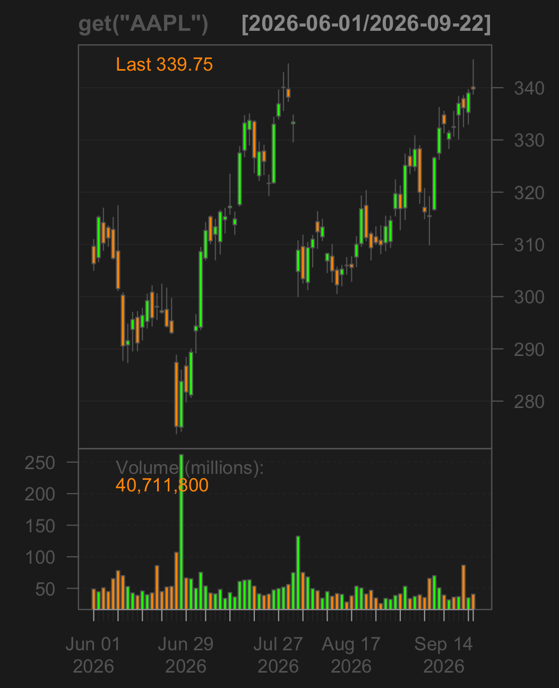
**Figure 1.9: Novel Decision Tree Plot**
library(party) # CLASSIFICATION # fitting library(ipred) data("GlaucomaM", package = "TH.data") glau <- GlaucomaM levels(glau$Class) <- c("glau", "norm") fm.class <- party::ctree(Class ~ ., data = glau) # visualization pushViewport(viewport(gp=gpar(cex=0.6))) plot(fm.class, new=FALSE, terminal.panel=myNode) popViewport()
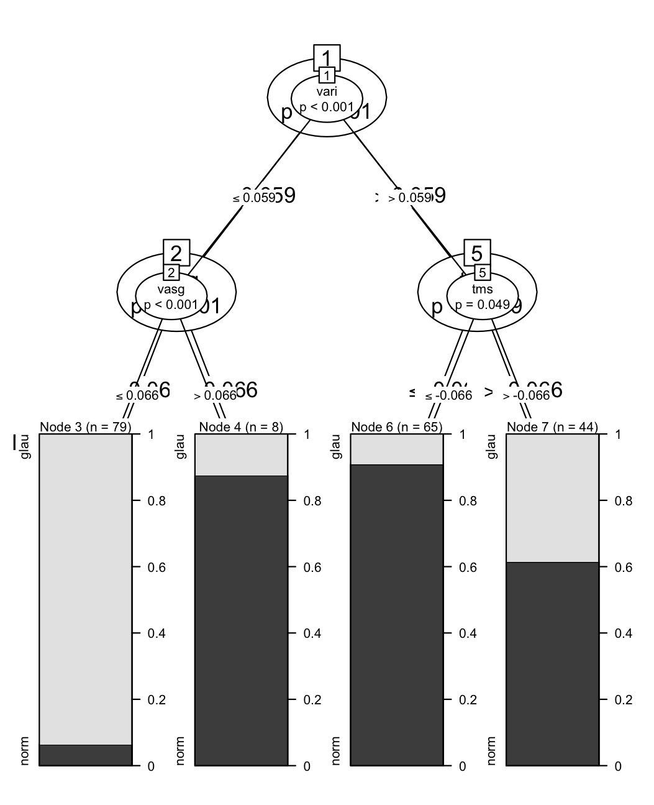
**Figure 1.10: Table-like Plot**
# The horizontal gap between columns with content colgap <- unit(3, "mm") # The data for column 1 # # Of course, many other possible ways to represent the data # One advantage with this way is that col1$labels can be used # directly in the calculation of the column widths for the # main table (see below) # # NOTE: textGrobs are used here so that the fontface (bold in # some cases) is associated with the label. In this way, the # calculation of column widths takes into account the font face. col1 <- list(labels= list(textGrob("Centre", x=0, just="left", gp=gpar(fontface="bold", col="white")), textGrob("Thailand", x=0, just="left"), textGrob("Philippines", x=0, just="left"), textGrob("All in situ", x=0, just="left", gp=gpar(fontface="bold.italic")), textGrob("Colombia", x=0, just="left"), textGrob("Spain", x=0, just="left"), textGrob("All invasive", x=0, just="left", gp=gpar(fontface="bold.italic")), textGrob("All", x=0, just="left", gp=gpar(fontface="bold"))), rows=c(1, 5, 6, 8, 11, 12, 14, 16)) # Labels in col 1 which are not used to calculate the # column width (they spill over into col 2) col1plus <- list(labels= list(textGrob("Carcinoma in situ", x=0, just="left", gp=gpar(fontface="bold.italic")), textGrob("Invasive cancer", x=0, just="left", gp=gpar(fontface="bold.italic"))), rows=c(4, 10)) # Data for column 2 col2 <- list(labels= list(textGrob("Cases", x=1, just="right", gp=gpar(fontface="bold", col="white")), textGrob("327", x=1, just="right"), textGrob("319", x=1, just="right"), textGrob("1462", x=1, just="right", gp=gpar(fontface="bold")), textGrob("96", x=1, just="right"), textGrob("115", x=1, just="right"), textGrob("211", x=1, just="right", gp=gpar(fontface="bold")), textGrob("1673", x=1, just="right", gp=gpar(fontface="bold"))), rows=c(1, 5, 6, 8, 11, 12, 14, 16)) # Data for column 3 (width specified as a physical size below) col3 <- list(OR=c(0.72, 1.27, 1.17, 2.97, 1.86, 2.01, 1.20), LL=c(0.52, 0.87, 1.03, 1.42, 0.46, 1.09, 1.07), UL=c(1.00, 1.85, 1.32, 6.21, 7.51, 3.71, 1.35), rows=c(5, 6, 8, 11, 12, 14, 16), # "s" means summary, "n" means normal type=c("n", "n", "s", "n", "n", "s", "s")) # Sizes of boxes information <- sqrt(1 / ((log(col3$UL) - log(col3$OR))/1.96)) col3$sizes <- information/max(information) # Width of column 3 col3width <- unit(1.5, "inches") # Range on the x-axis for column 3 col3$range <- c(0, 4) # Function to draw a cell in a text column drawLabelCol <- function(col, j) { for (i in 1:length(col$rows)) { pushViewport(viewport(layout.pos.row=col$rows[i], layout.pos.col=j)) # Labels are grobs containing their location so just # have to grid.draw() them grid.draw(col$labels[[i]]) popViewport() } } # Function to draw a non-summary rect-plus-CI drawNormalCI <- function(LL, OR, UL, size) { # NOTE the use of "native" units to position relative to # the x-axis scale, and "snpc" units to size relative to # the height of the row # ("snpc" stands for "square normalised parent coordinates" # which means that the value is calculated as a proportion # of the width and height of the current viewport and the # physically smaller of these is used) grid.rect(x=unit(OR, "native"), width=unit(size, "snpc"), height=unit(size, "snpc"), gp=gpar(fill="black")) # Draw arrow if exceed col range # convertX() used to convert between coordinate systems if (convertX(unit(UL, "native"), "npc", valueOnly=TRUE) > 1) grid.lines(x=unit(c(LL, 1), c("native", "npc")), y=.5, arrow=arrow(length=unit(0.05, "inches"))) else { # Draw line white if totally inside rect lineCol <- if ((convertX(unit(OR, "native") + unit(0.5*size, "lines"), "native", valueOnly=TRUE) > UL) && (convertX(unit(OR, "native") - unit(0.5*size, "lines"), "native", valueOnly=TRUE) < LL)) "white" else "black" grid.lines(x=unit(c(LL, UL), "native"), y=0.5, gp=gpar(col=lineCol)) } } # Function to draw a summary "diamond" drawSummaryCI <- function(LL, OR, UL, size) { # Not sure how to calc the heights of the diamonds so # I'm just using half the height of the equivalent rect grid.polygon(x=unit(c(LL, OR, UL, OR), "native"), y=unit(0.5 + c(0, 0.25*size, 0, -0.25*size), "npc")) } # Function to draw a "data" column drawDataCol <- function(col, j) { pushViewport(viewport(layout.pos.col=j, xscale=col$range)) grid.lines(x=unit(1, "native"), y=0:1) # Assume that last value in col is "All" grid.lines(x=unit(col$OR[length(col$OR)], "native"), y=0:1, gp=gpar(lty="dashed")) grid.xaxis(gp=gpar(cex=0.6)) grid.text("OR", y=unit(-2, "lines")) popViewport() for (i in 1:length(col$rows)) { pushViewport(viewport(layout.pos.row=col$rows[i], layout.pos.col=j, xscale=col$range)) if (col$type[i] == "n") drawNormalCI(col$LL[i], col$OR[i], col$UL[i], col$sizes[i]) else drawSummaryCI(col$LL[i], col$OR[i], col$UL[i], col$sizes[i]) popViewport() } } # Draw the table # # The table is just a big layout # # All rows are the height of 1 line of text # # Widths of column 1 and 2 are based on widths of labels in # col$labels and col2$labels pushViewport(viewport(layout=grid.layout(16, 5, widths= unit.c(max(unit(rep(1, 8), "grobwidth", col1$labels)), colgap, max(unit(rep(1, 8), "grobwidth", col2$labels)), colgap, col3width), heights=unit(c(1, 0, rep(1, 14)), "lines")))) pushViewport(viewport(layout.pos.row=1)) grid.rect(gp=gpar(col=NA, fill="black")) popViewport() for (i in c(8, 14, 16)) { pushViewport(viewport(layout.pos.row=i)) grid.rect(gp=gpar(col=NA, fill="gray80")) popViewport() } drawLabelCol(col1, 1) drawLabelCol(col1plus, 1) drawLabelCol(col2, 3) drawDataCol(col3, 5) popViewport()
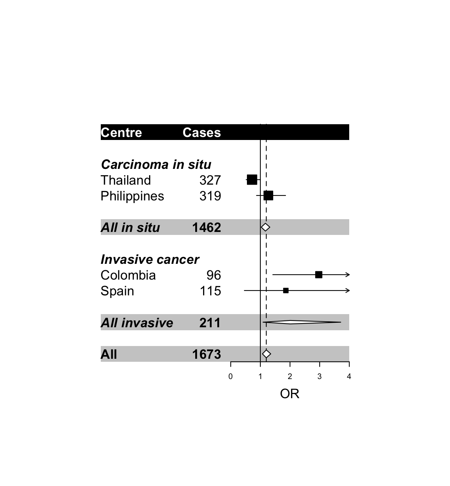
**Figure 1.11: Didactic diagrams**
par(mfrow=c(2, 1), pty="s", mar=rep(1, 4)) # Create plotting region and plot outer circle plot(c(-1.1, 1.2), c(-1.1, 1.2), type="n", xlab="", ylab="", xaxt="n", yaxt="n", cex.lab=2.5) angs <- seq(0, 2*pi, length=500) XX <- sin(angs) YY <- cos(angs) lines(XX, YY, type="l") # Set constants phi1 <- pi*2/9 k1 <- sin(phi1) k2 <- cos(phi1) # Create gray regions obsphi <- pi/12 lambdas <- seq(-pi, pi, length=500) xx <- cos(pi/2 - obsphi)*sin(lambdas) yy <- k2*sin(pi/2 - obsphi)-k1 * cos(pi/2 - obsphi)*cos(lambdas) polygon(xx, yy, col="gray") lines(xx, yy, lwd=2) theta1sA <- seq(-obsphi, obsphi, length=500) theta2sA <- acos(cos(obsphi)/cos(theta1sA)) theta1sB <- seq(obsphi, -obsphi, length=500) theta2sB <- -acos(cos(obsphi)/cos(theta1sB)) theta1s <- c(theta1sA, theta1sB) theta2s <- c(theta2sA, theta2sB) xx <- cos(theta1s)*sin(theta2s+pi/4) yy <- k2*sin(theta1s)-k1*cos(theta1s)*cos(theta2s+pi/4) polygon(xx, yy, col="gray") lines(xx, yy, lwd=2) xx <- cos(theta1s)*sin(theta2s-pi/4) yy <- k2*sin(theta1s)-k1*cos(theta1s)*cos(theta2s-pi/4) polygon(xx, yy, col="gray") lines(xx, yy, lwd=2) # Plot longitudes vals <- seq(0, 7, 1)*pi/8 for(lambda in vals){ sl <- sin(lambda) cl <- cos(lambda) phi <- atan(((0-1)*k2*cl)/(k1)) angs <- seq(phi, pi+phi, length=500) xx <- cos(angs)*sl yy <- k2*sin(angs)-k1*cos(angs)*cl lines(xx, yy, lwd=.5) } # Grey out polar cap phi <- 5.6*pi/12 lambdas <- seq(-pi, pi, length=500) xx <- cos(phi)*sin(lambdas) yy <- k2*sin(phi)-k1 * cos(phi)*cos(lambdas) polygon(xx, yy, col="gray") # Plot Latitudes vals2 <- seq(-2.8, 5.6, 1.4)*pi/12 for(phi in vals2){ if (k1*sin(phi) > k2 * cos(phi)) crit <- pi else crit <- acos((-k1*sin(phi))/(k2*cos(phi))) lambdas <- seq(-crit, crit, length=500) xx <- cos(phi)*sin(lambdas) yy <- k2*sin(phi)-k1 * cos(phi)*cos(lambdas) lines(xx, yy, lwd=.5) } # Plots axes and label lines(c(0.00, 0.00), c(k2*sin(pi/2), 1.11), lwd=4) lines(c(0.00, 0.00), c(-1, -1.12), lwd=4) a2x <- sin(-pi/4) a2y <- cos(-pi/4)*(-k1) lines(c(a2x, 1.5*a2x), c(a2y, 1.5*a2y), lwd=4) k <- sqrt(a2x^2+a2y^2) lines(c(-a2x/k, 1.2*(-a2x/k)), c(-a2y/k, 1.2*(-a2y/k)), lwd=4) a3x <- sin(pi/4) a3y <- cos(pi/4)*(-k1) lines(c(a3x, 1.5*a3x), c(a3y, 1.5*a3y), lwd=4) k <- sqrt(a3x^2+a3y^2) lines(c(-a3x/k, 1.2*(-a3x/k)), c(-a3y/k, 1.2*(-a3y/k)), lwd=4) text(0.1, 1.12, expression(bold(X[1]))) text(-1.07, -.85, expression(bold(X[2]))) text(1.11, -.85, expression(bold(X[3]))) # set plot region and draw outer circle plot(c(-1.1, 1.2), c(-1.1, 1.2), type="n", xlab="", ylab="", xaxt="n", yaxt="n", cex.lab=2.5) angs <- seq(0, 2*pi, length=500) XX <- sin(angs) YY <- cos(angs) lines(XX, YY, type="l") # set constants phi1 <- pi*2/9 k1 <- sin(phi1) k2 <- cos(phi1) obsphi <- pi/24 # create X2X3 gray region and plot boundary crit <- acos((-k1*sin(obsphi))/(k2 * cos(obsphi))) lambdas <- seq(-crit, crit, length=500) xx1 <- cos(obsphi)*sin(lambdas) yy1 <- k2*sin(obsphi)-k1 * cos(obsphi)*cos(lambdas) obsphi <- -pi/24 crit <- acos((-k1*sin(obsphi))/(k2 * cos(obsphi))) lambdas <- seq(crit, -crit, length=500) xx3 <- cos(obsphi)*sin(lambdas) yy3 <- k2*sin(obsphi)-k1 * cos(obsphi)*cos(lambdas) ang1 <- atan(xx1[500]/yy1[500]) ang2 <- pi+atan(xx3[1]/yy3[1]) angs <- seq(ang1, ang2, length=50) xx2 <- sin(angs) yy2 <- cos(angs) ang4 <- atan(xx1[1]/yy1[1]) ang3 <- -pi+ atan(xx3[500]/yy3[500]) angs <- seq(ang3, ang4, length=50) xx4 <- sin(angs) yy4 <- cos(angs) xxA <- c(xx1, xx2, xx3, xx4) yyA <- c(yy1, yy2, yy3, yy4) polygon(xxA, yyA, border="gray", col="gray") xx1A <- xx1 yy1A <- yy1 xx3A <- xx3 yy3A <- yy3 # create X1X3 gray region and plot boundary obsphi <- pi/24 crit <- pi/2-obsphi theta1sA <- c(seq(-crit, crit/2, length=200), seq(crit/2, crit, length=500)) theta2sA <- asin(cos(crit)/cos(theta1sA)) theta1sB <- seq(crit, crit/2, length=500) theta2sB <- pi-asin(cos(crit)/cos(theta1sB)) theta1s <- c(theta1sA, theta1sB) theta2s <- c(theta2sA, theta2sB) vals <- k1*sin(theta1s)+k2*cos(theta1s)*cos(theta2s+pi/4) xx1 <- cos(theta1s[vals>=0])*sin(theta2s[vals>=0]+pi/4) yy1 <- k2*sin(theta1s[vals>=0])-k1*cos(theta1s[vals>=0])*cos(theta2s[vals>=0]+pi/4) theta2s <- -theta2s vals <- k1*sin(theta1s)+k2*cos(theta1s)*cos(theta2s+pi/4) xx3 <- cos(theta1s[vals>=0])*sin(theta2s[vals>=0]+pi/4) yy3 <- k2*sin(theta1s[vals>=0])-k1*cos(theta1s[vals>=0])*cos(theta2s[vals>=0]+pi/4) rev <- seq(length(xx3), 1, -1) xx3 <- xx3[rev] yy3 <- yy3[rev] ang1 <- pi+atan(xx1[length(xx1)]/yy1[length(yy1)]) ang2 <- pi+atan(xx3[1]/yy3[1]) angs <- seq(ang1, ang2, length=50) xx2 <- sin(angs) yy2 <- cos(angs) ang4 <- pi+atan(xx1[1]/yy1[1]) ang3 <- pi+atan(xx3[length(xx3)]/yy3[length(yy3)]) angs <- seq(ang3, ang4, length=50) xx4 <- sin(angs) yy4 <- cos(angs) xxB <- c(xx1, -xx2, xx3, xx4) yyB <- c(yy1, -yy2, yy3, yy4) polygon(xxB, yyB, border="gray", col="gray") xx1B <- xx1 yy1B <- yy1 xx3B <- xx3 yy3B <- yy3 # create X1X2 gray region and plot boundary vals <- k1*sin(theta1s)+k2*cos(theta1s)*cos(theta2s-pi/4) xx1 <- cos(theta1s[vals>=0])*sin(theta2s[vals>=0]-pi/4) yy1 <- k2*sin(theta1s[vals>=0])-k1*cos(theta1s[vals>=0])*cos(theta2s[vals>=0]-pi/4) theta2s <- -theta2s vals <- k1*sin(theta1s)+k2*cos(theta1s)*cos(theta2s-pi/4) xx3 <- cos(theta1s[vals>=0])*sin(theta2s[vals>=0]-pi/4) yy3 <- k2*sin(theta1s[vals>=0])-k1*cos(theta1s[vals>=0])*cos(theta2s[vals>=0]-pi/4) rev <- seq(length(xx3), 1, -1) xx3 <- xx3[rev] yy3 <- yy3[rev] ang1 <- pi+atan(xx1[length(xx1)]/yy1[length(yy1)]) ang2 <- pi+atan(xx3[1]/yy3[1]) angs <- seq(ang1, ang2, length=50) xx2 <- sin(angs) yy2 <- cos(angs) ang4 <- pi+atan(xx1[1]/yy1[1]) ang3 <- pi+atan(xx3[length(xx3)]/yy3[length(yy3)]) angs <- seq(ang3, ang4, length=50) xx4 <- sin(angs) yy4 <- cos(angs) xx <- c(xx1, -xx2, xx3, xx4) yy <- c(yy1, -yy2, yy3, yy4) polygon(xx, yy, border="gray", col="gray") xx1C <- xx1 yy1C <- yy1 xx3C <- xx3 yy3C <- yy3 # plot boundaries to gray regions lines(xx1C[2:45], yy1C[2:45], lwd=2) lines(xx1C[69:583], yy1C[69:583], lwd=2) lines(xx1C[660:1080], yy1C[660:1080], lwd=2) lines(xx3C[13:455], yy3C[13:455], lwd=2) lines(xx3C[538:1055], yy3C[538:1055], lwd=2) lines(xx3C[1079:1135], yy3C[1079:1135], lwd=2) lines(xx1A[6:113], yy1A[6:113], lwd=2) lines(xx1A[153:346], yy1A[153:346], lwd=2) lines(xx1A[389:484], yy1A[389:484], lwd=2) lines(xx3A[1:93], yy3A[1:93], lwd=2) lines(xx3A[140:362], yy3A[140:362], lwd=2) lines(xx3A[408:497], yy3A[408:497], lwd=2) lines(xx1B[2:45], yy1B[2:45], lwd=2) lines(xx1B[69:583], yy1B[69:583], lwd=2) lines(xx1B[660:1080], yy1B[660:1080], lwd=2) lines(xx3B[13:455], yy3B[13:455], lwd=2) lines(xx3B[538:1055], yy3B[538:1055], lwd=2) lines(xx3B[1079:1135], yy3B[1079:1135], lwd=2) # Plot longitudes vals <- seq(-7, 8, 1)*pi/8 for(lambda in vals){ sl <- sin(lambda) cl <- cos(lambda) phi <- atan(((0-1)*k2*cl)/(k1)) angs <- seq(phi, 5.6*pi/12, length=500) xx <- cos(angs)*sl yy <- k2*sin(angs)-k1*cos(angs)*cl lines(xx, yy, lwd=.5) } # Plot Latitudes # vals2 <- seq(-2.8, 5.6, 1.4)*pi/12 vals2 <- c(-1.5, 0, 1.5, 3.0, 4.5, 5.6)*pi/12 for(phi in vals2){ if (k1*sin(phi) > k2 * cos(phi)) crit <- pi else crit <- acos((-k1*sin(phi))/(k2*cos(phi))) lambdas <- seq(-crit, crit, length=500) xx <- cos(phi)*sin(lambdas) yy <- k2*sin(phi)-k1 * cos(phi)*cos(lambdas) lines(xx, yy, lwd=.5) } # create lines for X1X2- and X1X3-planes lambda <- pi/4 sl <- sin(lambda) cl <- cos(lambda) phi <- atan(((0-1)*k2*cl)/(k1)) angs <- seq(phi, pi+phi, length=500) xx <- cos(angs)*sl yy <- k2*sin(angs)-k1*cos(angs)*cl lines(xx, yy, lwd=2) lambda <- 3*pi/4 sl <- sin(lambda) cl <- cos(lambda) phi <- atan(((0-1)*k2*cl)/(k1)) angs <- seq(phi, pi+phi, length=500) xx <- cos(angs)*sl yy <- k2*sin(angs)-k1*cos(angs)*cl lines(xx, yy, lwd=2) # create line for X2X3-plane phi <- 0 crit <- acos((-k1*sin(phi))/(k2 * cos(phi))) lambdas <- seq(-crit, crit, length=500) xx <- cos(phi)*sin(lambdas) yy <- k2*sin(phi)-k1 * cos(phi)*cos(lambdas) lines(xx, yy, lwd=2) # create axes lines(c(0.00, 0.00), c(k2*sin(pi/2), 1.11), lwd=4) lines(c(0.00, 0.00), c(-1, -1.12), lwd=4) a2x <- sin(-pi/4) a2y <- cos(-pi/4)*(-k1) lines(c(a2x, 1.5*a2x), c(a2y, 1.5*a2y), lwd=4) a3x <- sin(pi/4) a3y <- cos(pi/4)*(-k1) lines(c(a3x, 1.5*a3x), c(a3y, 1.5*a3y), lwd=4) k <- sqrt(a3x^2+a3y^2) lines(c(-a3x/k, 1.2*(-a3x/k)), c(-a3y/k, 1.2*(-a3y/k)), lwd=4) k <- sqrt(a2x^2+a2y^2) lines(c(-a2x/k, 1.2*(-a2x/k)), c(-a2y/k, 1.2*(-a2y/k)), lwd=4) # add text text(-1.07, -.85, expression(bold(X[2]))) text(1.11, -.85, expression(bold(X[3]))) text(0.1, 1.12, expression(bold(X[1]))) lines(XX, YY, type="l")
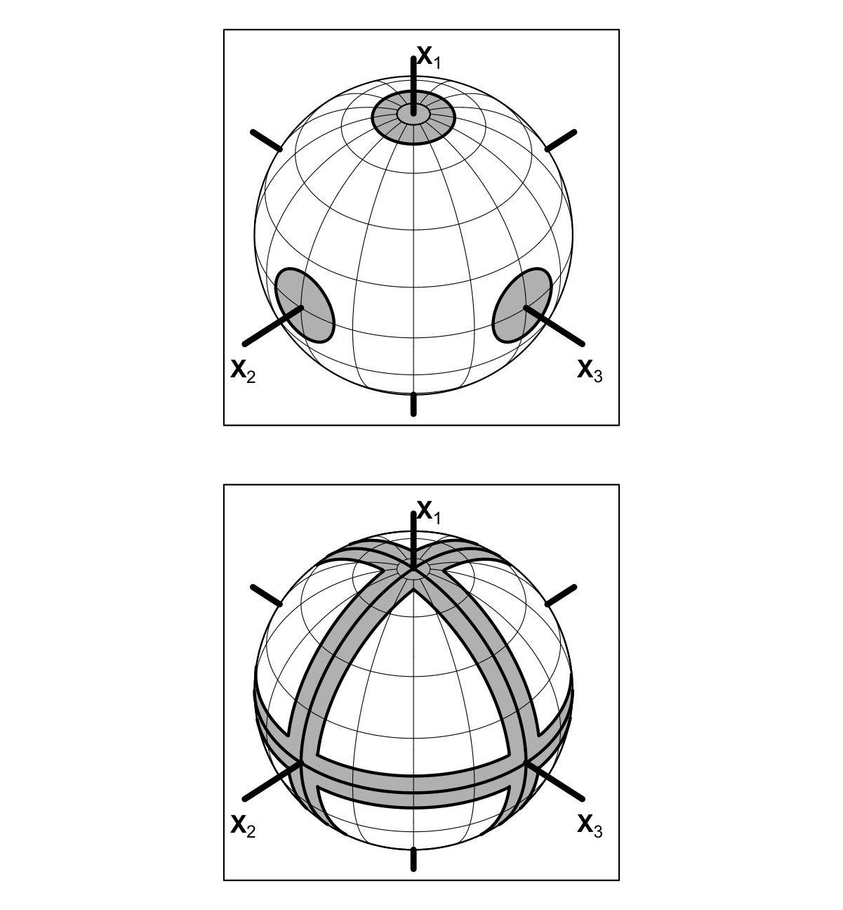
**Figure 1.12: Flow diagram**
uoaBlue <- "#00467f" library(colorspace) uoaLCH <- colorspace::coords(as(colorspace::hex2RGB(uoaBlue), "polarLUV")) hues <- c(uoaLCH[3], uoaLCH[3] + 90, uoaLCH[3] + 180, uoaLCH[3] + 270) darks <- hcl(hues, uoaLCH[2], uoaLCH[1]) lights <- hcl(hues, uoaLCH[2], 80) arr <- arrow(length=unit(2, "mm"), type="closed") document <- function(label, x=.5, y=.5, w=unit(2, "cm"), h=unit(3, "cm"), d=unit(6, "mm"), ann=TRUE, border=NA, fill=NULL, name="script") { if (is.null(fill)) { fill=lights[1] } pushViewport(viewport(x, y, w, h, name="scriptvp")) grid.polygon(unit.c(unit(0, "npc"), unit(0, "npc"), unit(1, "npc"), unit(1, "npc"), d, d, unit(0, "npc")), unit.c(unit(1, "npc") - d, unit(0, "npc"), unit(0, "npc"), unit(1, "npc"), unit(1, "npc"), unit(1, "npc") - d, unit(1, "npc") - d), gp=gpar(col=border, fill=fill), name=name) grid.polygon(unit.c(unit(0, "npc"), d, d), unit.c(unit(1, "npc") - d, unit(1, "npc") - d, unit(1, "npc")), gp=gpar(col=NA, fill=darks[1])) grid.text(label) if (ann) { grid.rect(y=0, height=unit(2, "lines"), just="top", gp=gpar(col=NA, fill=darks[1])) grid.segments(0, 0, 1, 0, gp=gpar(col="white", lwd=2)) grid.text("SCRIPT", gp=gpar(col="white"), y=unit(-1, "lines")) } upViewport() } module <- function(label, nin, nout, x=.5, y=.5, w=unit(3, "cm"), h=unit(4, "cm"), ann=TRUE, border=NA, labelin=TRUE, labelout=TRUE, inoutext=.2, arrowsin=TRUE, arrowsout=TRUE) { pushViewport(viewport(x, y, w, h, name="modulevp")) grid.rect(gp=gpar(col=border, fill=lights[2])) document(label, ann=FALSE, border=darks[1], name=label) if (arrowsin) { arrin <- arr } else { arrin <- NULL } if (arrowsout) { arrout <- arr } else { arrout <- NULL } if (nin > 0) { grid.segments(-inoutext, 1:nin/(nin+1), grobX(rectGrob(vp="scriptvp"), 180), 1:nin/(nin+1), gp=gpar(lwd=3, col="black"), arrow=arrin) if (is.character(labelin)) { lab <- labelin fam <- "mono" } else if (labelin) { lab <- "IN" fam <- "sans" } else { lab <- NULL } if (!is.null(lab)) { grid.text(lab, unit(-inoutext, "npc") - unit(2, "mm"), 1:nin/(nin+1), just="right", gp=gpar(cex=.7, fontfamily=fam)) } } if (nout > 0) { grid.segments(grobX(rectGrob(vp="scriptvp"), 0), 1:nout/(nout+1), 1 + inoutext, 1:nout/(nout+1), gp=gpar(lwd=3, col="black"), arrow=arrout) if (is.character(labelout)) { lab <- labelout fam <- "mono" } else if (labelout) { lab <- "OUT" fam <- "sans" } else { lab <- NULL } if (!is.null(lab)) { grid.text(lab, unit(1 + inoutext, "npc") + unit(2, "mm"), 1:nout/(nout+1), just="left", gp=gpar(cex=.7, fontfamily=fam)) } } if (ann) { grid.rect(y=0, height=unit(2, "lines"), just="top", gp=gpar(col=NA, fill=darks[2])) grid.segments(0, 0, 1, 0, gp=gpar(col="white", lwd=2)) grid.text("MODULE", gp=gpar(col="white"), y=unit(0, "npc") - unit(1, "lines")) } upViewport() } pipeline <- function(x=.5, y=.5, width=unit(10, "cm"), height=unit(6, "cm"), modules=TRUE) { pushViewport(viewport(x, y, width=width, height=height, name="pipelinevp")) grid.rect(gp=gpar(col=NA, fill=lights[4])) if (modules) { module("R", 1, 2, x=1/4, labelout=FALSE, inoutext=.5, arrowsout=FALSE, ann=FALSE, border=darks[2]) module("Python", 2, 1, x=3/4, labelin=FALSE, inoutext=.5, ann=FALSE, border=darks[2]) } grid.rect(y=0, height=unit(2, "lines"), just="top", # gp=gpar(col=NA, fill=hcl(hue, sat, 40, trans))) gp=gpar(col=NA, fill=darks[4])) grid.segments(0, 0, 1, 0, gp=gpar(col="white", lwd=2)) grid.text("PIPELINE", gp=gpar(col="white"), y=unit(0, "npc") - unit(1, "lines")) upViewport() } # grid.newpage() pipeline(modules=FALSE, width=unit(10, "cm"), height=unit(10, "cm")) downViewport("pipelinevp") # Module 1 module("R", 0, 0, x=.2, labelin=FALSE, labelout=FALSE, ann=FALSE, border=darks[2]) downViewport("scriptvp") # inputs document(".csv", x=-.95, y=.4, w=unit(1, "cm"), h=unit(1.5, "cm"), d=unit(3, "mm"), ann=FALSE, border="black", fill="grey80") grid.segments(-.55, .4, 0, .4, arrow=arr, gp=gpar(lwd=3)) # outputs grid.curve(1, .7, 1.6, .9, arrow=arr, gp=gpar(lwd=3)) grid.rect(x=1.6, y=1.05, width=unit(1, "cm"), height=unit(1, "lines"), gp=gpar(fill="black")) grid.text("01011", x=1.6, y=1.05, gp=gpar(cex=.7, fontfamily="mono", col="white")) upViewport(2) # script # MARK memtopx <- convertX(grobX(nullGrob(x=1.6, y=1.2, vp=vpPath("modulevp", "scriptvp")), 0), "in") memtopy <- convertY(grobY(nullGrob(x=1.6, y=1.2, vp=vpPath("modulevp", "scriptvp")), 0), "in") csvbotx <- convertX(grobX(nullGrob(x=1.9, y=-.5, vp=vpPath("modulevp", "scriptvp")), 0), "in") csvboty <- convertY(grobY(nullGrob(x=1.9, y=-.5, vp=vpPath("modulevp", "scriptvp")), 0), "in") downViewport("scriptvp") grid.curve(1, .3, 1.9, .1, curv=-1, arrow=arr, gp=gpar(lwd=3)) document(".csv", x=1.9, y=-.2, w=unit(1, "cm"), h=unit(1.5, "cm"), d=unit(3, "mm"), ann=FALSE, border="black", fill="grey80") upViewport(2) # script # Module 2 module("R", 0, 0, x=.65, y=.75, labelin=FALSE, labelout=FALSE, ann=FALSE, border=darks[2]) grid.curve(memtopx, memtopy, grobX(rectGrob(vp=vpPath("modulevp", "scriptvp")), 180), grobY(rectGrob(vp=vpPath("modulevp", "scriptvp")), 180), curv=-1, arrow=arr, gp=gpar(lwd=3)) downViewport("scriptvp") grid.curve(1, .7, 1.75, .5, curv=-1, arrow=arr, gp=gpar(lwd=3)) document(".xml", x=1.75, y=.2, w=unit(1, "cm"), h=unit(1.5, "cm"), d=unit(3, "mm"), ann=FALSE, border="black", fill="grey80") grid.curve(1.75, -.1, .2, -.5, curv=-1, inflect=TRUE, gp=gpar(lwd=3)) upViewport(2) # script # MARK curvex <- convertX(grobX(nullGrob(x=.2, y=-.5, vp=vpPath("modulevp", "scriptvp")), 0), "in") curvey <- convertY(grobY(nullGrob(x=.2, y=-.5, vp=vpPath("modulevp", "scriptvp")), 0), "in") # Module 3 module("Python", 0, 0, x=.8, y=.25, labelin=FALSE, labelout=FALSE, ann=FALSE, border=darks[2]) grid.curve(csvbotx, csvboty, grobX(rectGrob(vp=vpPath("modulevp", "scriptvp")), 220), grobY(rectGrob(vp=vpPath("modulevp", "scriptvp")), 220), curv=1, arrow=arr, gp=gpar(lwd=3)) grid.curve(curvex, curvey, grobX(rectGrob(vp=vpPath("modulevp", "scriptvp")), 160), grobY(rectGrob(vp=vpPath("modulevp", "scriptvp")), 160), curv=1, arrow=arr, gp=gpar(lwd=3)) downViewport("scriptvp") grid.segments(1, .4, 1.55, .4, arrow=arr, gp=gpar(lwd=3)) document(".pdf", x=1.95, y=.4, w=unit(1, "cm"), h=unit(1.5, "cm"), d=unit(3, "mm"), ann=FALSE, border="black", fill="grey80") upViewport(2) # script upViewport() # pipeline
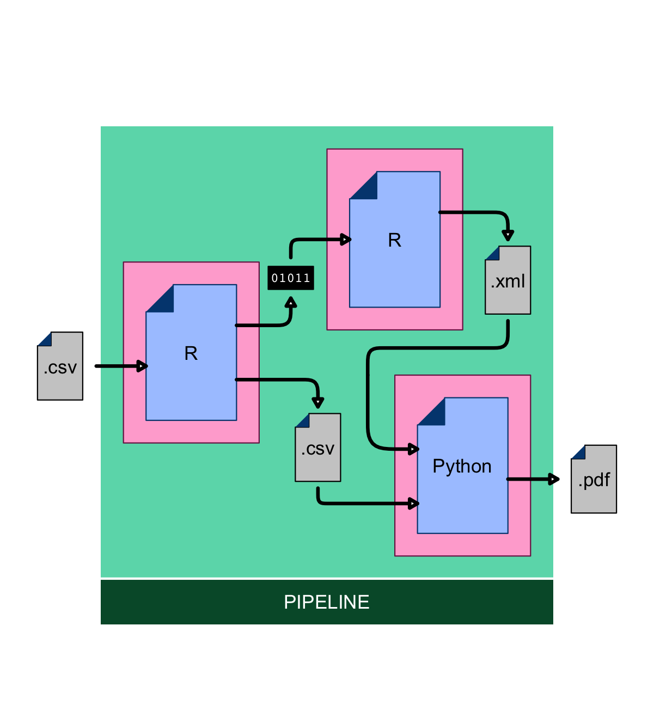
**Figure 1.13: Infographic**
library(jpeg) pic <- jpeg::readJPEG(system.file("extra", "AfterTheBombs.jpg", package="RGraphics")) w <- 1024 # 578 h <- 768 # 500 bg <- pic # [1:h, (1024 - w):1024] unknown <- 8.7 total <- 9.1 known <- total - unknown theta0 <- pi/4 thetaN <- theta0 + 2*pi*unknown/total theta <- seq(theta0, thetaN, length.out=100) x <- 0.3*c(0, cos(theta)) + 0.5 y <- 0.3*c(0, sin(theta)) + 0.35 # grid.newpage() grid.raster(bg) pushViewport(viewport(width=unit(1, "snpc"), height=unit(1, "snpc"), gp=gpar(cex=1.2))) grid.polygon(x, y, gp=gpar(col=NA, fill=rgb(.67, 0, .11, .7))) label1 <- textGrob("UNACCOUNTED\nFOR", unit(.2, "npc") - unit(2, "mm"), unit(.6, "npc") + unit(2, "mm"), gp=gpar(cex=1.4, fontface="bold"), just=c("right", "bottom")) grid.rect(.2, .6, just=c("right", "bottom"), width=grobWidth(label1) + unit(4, "mm"), height=grobHeight(label1) + unit(4, "mm"), gp=gpar(col=NA, fill=rgb(1, 1, 1, .5))) grid.draw(label1) label2 <- textGrob("ACCOUNTED\nFOR", unit(.8, "npc") + unit(2, "mm"), unit(.6, "npc") + unit(2, "mm"), gp=gpar(cex=1.4, fontface="bold"), just=c("left", "bottom")) grid.rect(.8, .6, just=c("left", "bottom"), width=grobWidth(label2) + unit(4, "mm"), height=grobHeight(label2) + unit(4, "mm"), gp=gpar(col=NA, fill=rgb(1, 1, 1, .5))) grid.draw(label2) grid.segments(c(.2, .8), .6, c(.3, .7), .5, gp=gpar(lty="dotted", lwd=2)) heading <- textGrob("The Department of Defense is unable to account for the use of $8.7 billion of the $9.1 billion it spent on reconstruction in Iraq", x=unit(0.5, "cm"), y=unit(3, "lines"), just=c("left", "top"), gp=gpar(cex=1, col="white")) pushViewport(viewport(x=0, y=1, just=c("left", "top"), height=grobHeight(heading) + unit(4, "lines"), width=grobWidth(heading) + unit(1, "cm"))) grid.rect(gp=gpar(fill="black")) grid.segments(x0=unit(0.5, "cm"), x1=unit(1, "npc") - unit(0.5, "cm"), y0=unit(1, "npc") - unit(2, "lines"), y1=unit(1, "npc") - unit(2, "lines"), gp=gpar(col="grey50", lwd=2)) grid.text("That's 96 Percent", x=unit(0.5, "cm"), y=unit(1, "npc") - unit(1, "lines"), just="left", gp=gpar(fontface="bold", col="white")) grid.draw(heading) popViewport(2)
**Figure 1.14: Structure of the R graphics system **
size <- unit(.5, "in") node <- function(text, x, y, fill="grey") { grid.circle(x, y, r=size, gp=gpar(fill=fill), name=text) grid.text(text, x, y) } edge <- function(from, fangle, to, tangle, ends="last") { grid.segments(grobX(from, fangle), grobY(from, fangle), grobX(to, tangle), grobY(to, tangle), arrow=arrow(angle=15, type="closed", ends=ends), gp=gpar(fill="black")) } curve <- function(from, fangle, to, tangle, curv, ends="last") { x1 <- convertX(grobX(from, fangle), "in") y1 <- convertY(grobY(from, fangle), "in") x2 <- convertX(grobX(to, tangle), "in") y2 <- convertY(grobY(to, tangle), "in") grid.curve(x1, y1, x2, y2, curvature=curv, ncp=5, square=FALSE, arrow=arrow(angle=15, type="closed", ends=ends), gp=gpar(fill="black")) } grid.newpage() node("grDevices", .5, 3/5) node("graphics", .5, 4/5) node("grid", .5, 2/5) node("lattice", 2/5, 1/5) node("ggplot2", 3/5, 1/5) node("grImport", 1/5, 3/5, fill="white") node("grImport2", 1/5, 1.5/5, fill="white") node("gridBase", 3.5/5, 3/5, fill="white") node("gridGraphics", 4.5/5, 2.5/5, fill="white") node("gridSVG", 4/5, 1.5/5, fill="white") edge("grDevices", 90, "graphics", 270) edge("grDevices", 270, "grid", 90) edge("grid", 240, "lattice", 70) edge("grid", 300, "ggplot2", 110) edge("grImport2", 20, "grid", 200) edge("grid", 340, "gridSVG", 160) edge("grImport", 35, "graphics", 215) edge("grImport", 325, "grid", 145) edge("grid", 45, "gridBase", 225, ends="both") edge("graphics", 315, "gridBase", 135, ends="both") edge("gridGraphics", 190, "grid", 10) curve("graphics", 20, "gridGraphics", 90, -.5)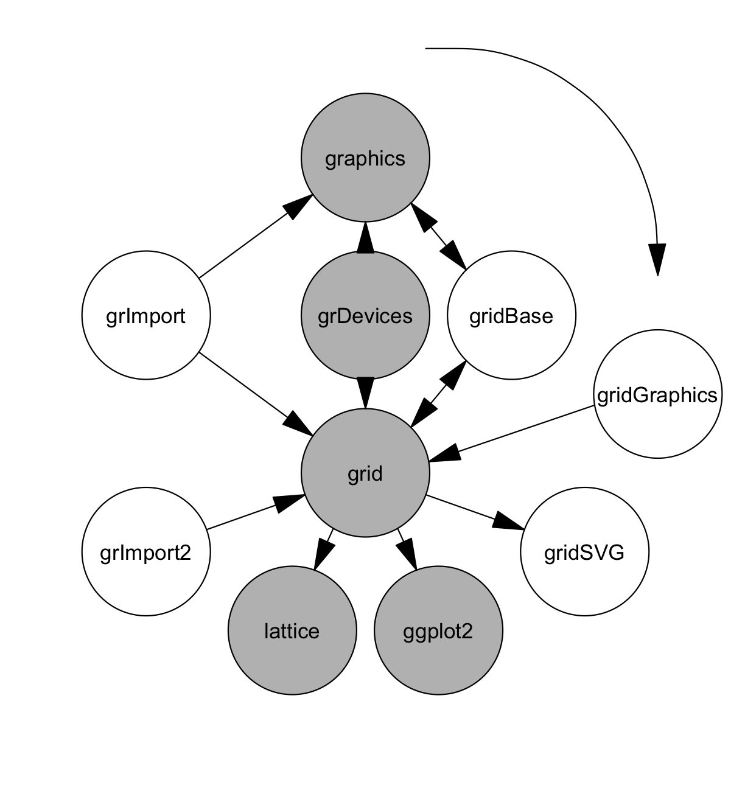
Exercise the plotting functions:
Setting up the canvas: par():
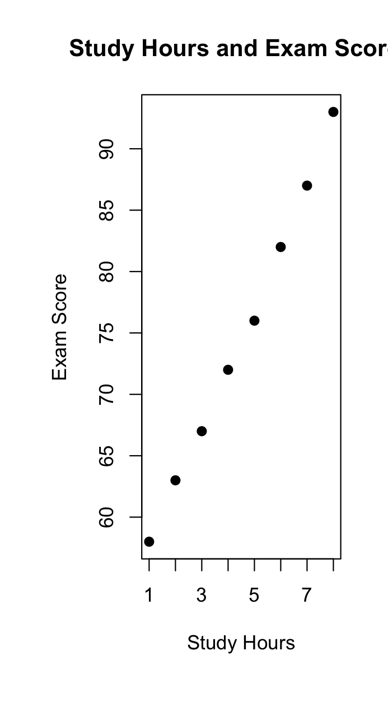
box():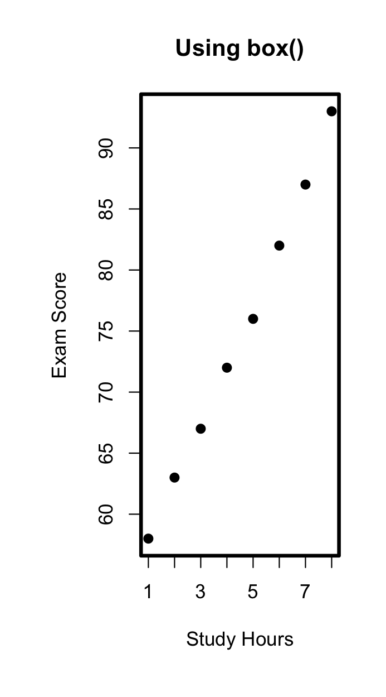
axis():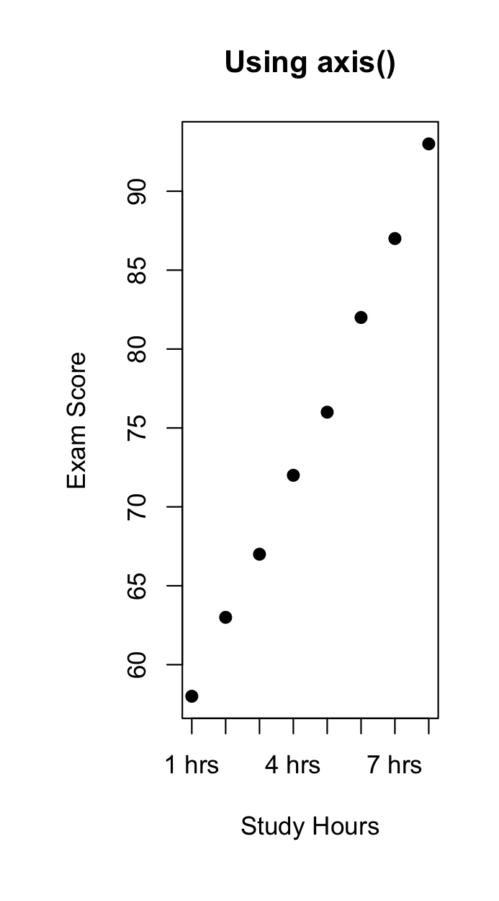
Draw the whole plots:
hist():
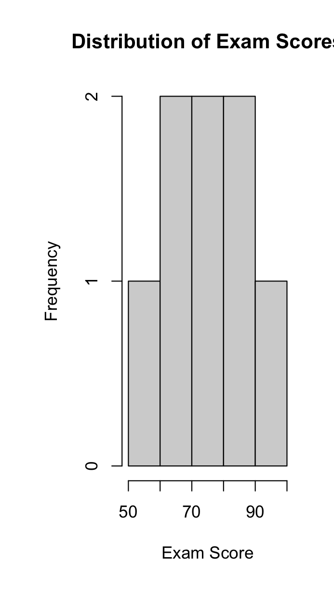
boxplot():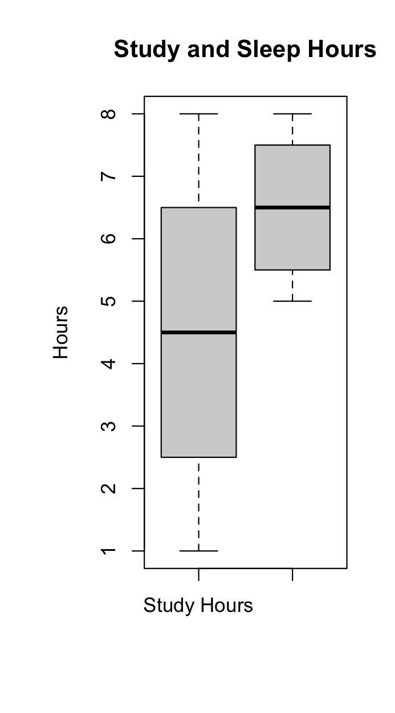
pie():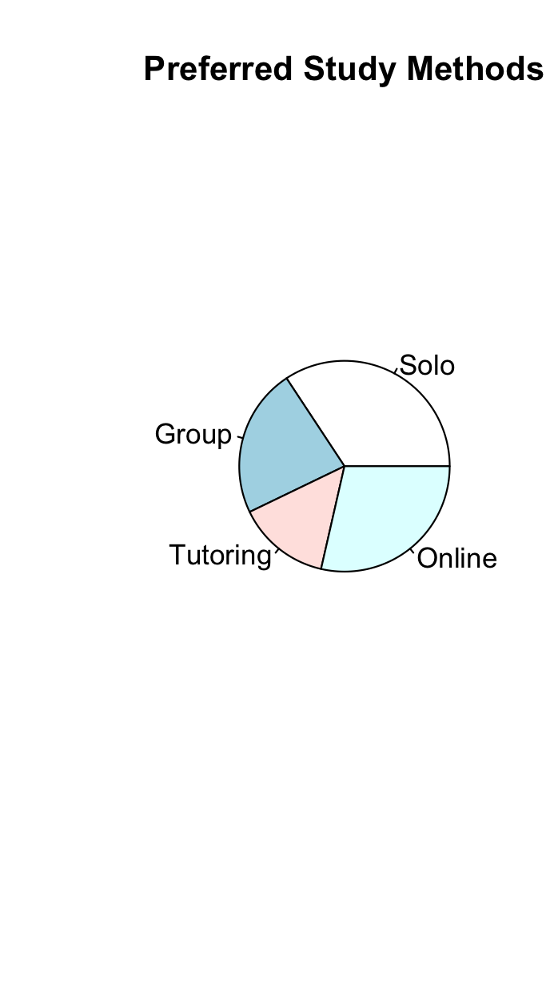
persp():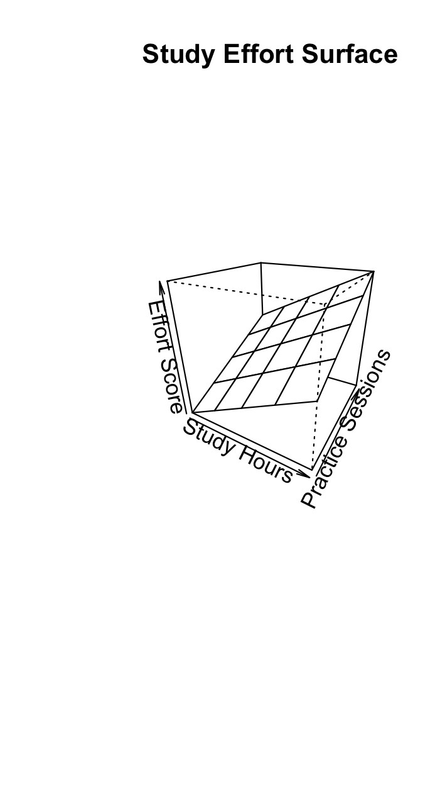
Add to an existing plot:
points():
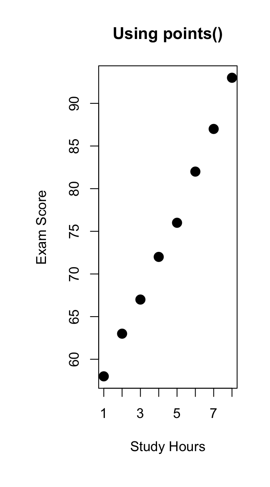
lines():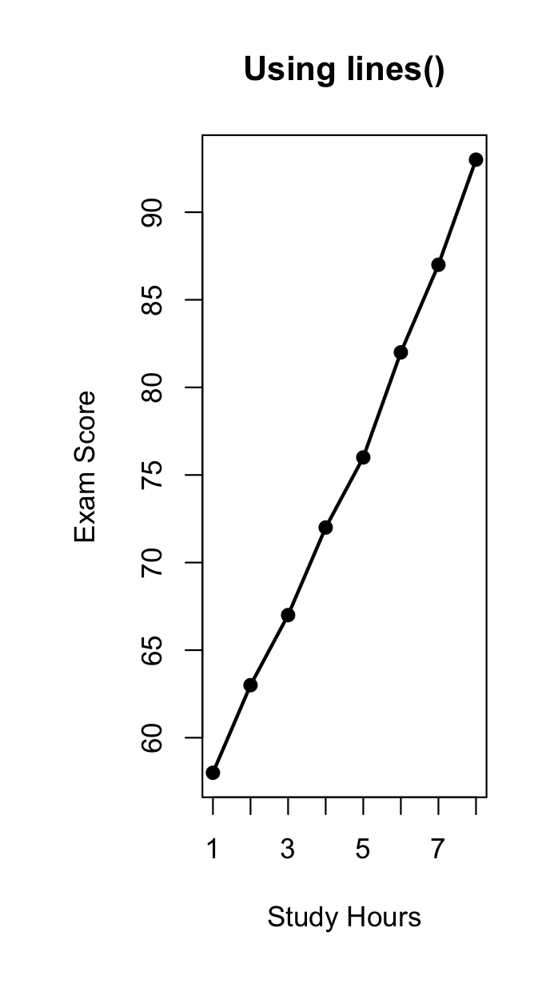
Annotate:
text():
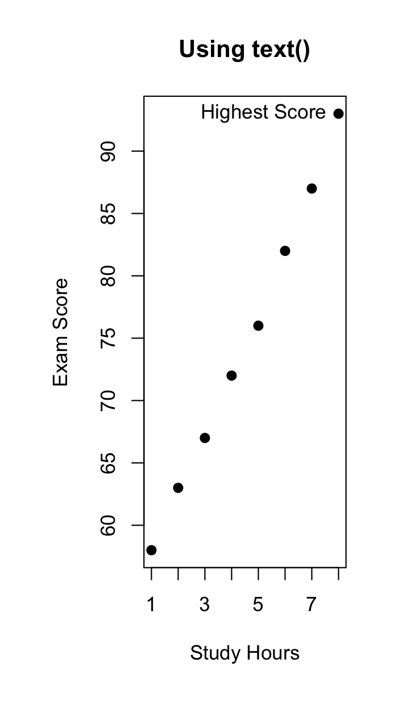
mtext():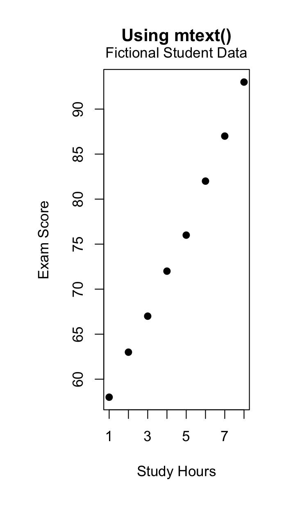
legend():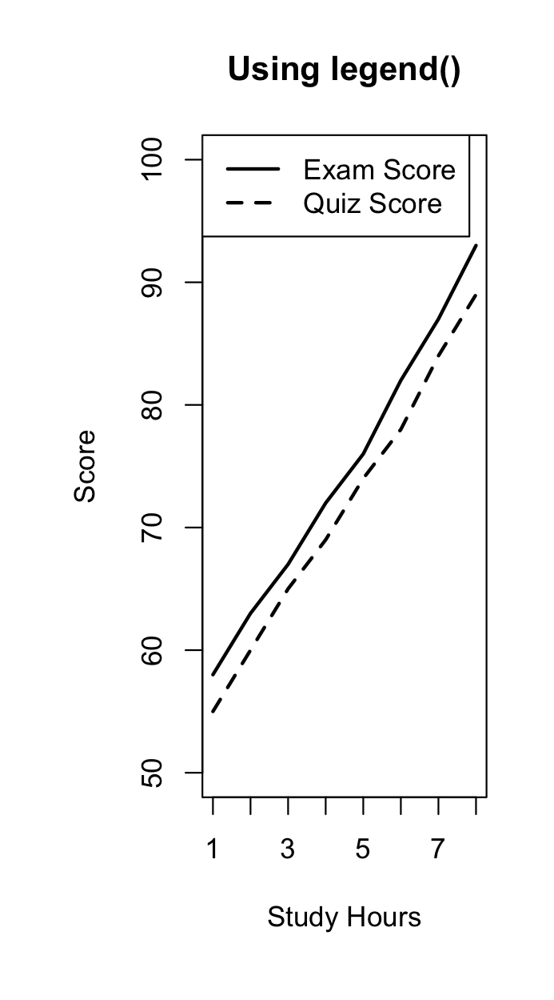
Data: The Happy Planet Index